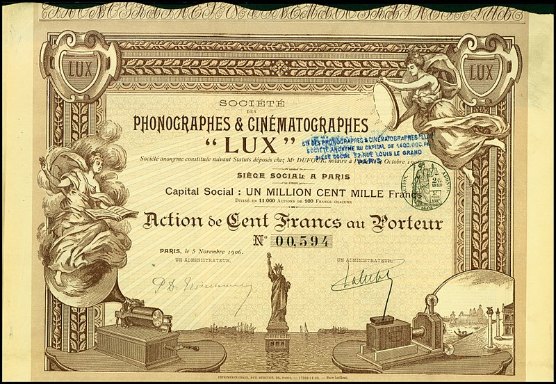

French Cinema
Pathé
In France film-production was still dominated by the two largest comapnies, Pathé and Gaumont.
Pathé had, during the course of 1905, massively increased its production (150%) as a deliberate policy, not so much to meet a perceived
increased demand as quite simply to impose itself irresistibly in a market becoming increasingly competitive and also, deally
at least, to reduce unit costs in such a way as to make it difficult for its rivals to compete. In practice, because of the increased
costs in modernising and expanding studio faciliies, at Vincennes, Montreuil and Joinville, and the increased cost of additinal
personnel that the increase in production had entailed, Pathé was faced in 1906 with a paramount need to cut its costs, a subject
that entirely dominated the Pathé board's discussions during the year. One way of reducing unit costs without reducing production
was to increase the length of films. Thus a continued increase in production in the year (97%) was accompanied, as it had not been
in 1905 by a significant increase (48%) in the average length of the films produced.
So the gradually increasing length of films had nothing much to do with artistic desiderata or with the lobbying of the increaingly
vociferous "art film" lobby - matter rarely if ever discussed by the Pathé board - but simply with hard economic facts as they saw
them. And, by modern standards, the change was very gradual and very limited (an increase in overall average length from 66mm, about 3 mintes,
in 1905 to 95mm, about 5 minutes long, in 1906), a pattern of slow but steady increase in film-length that would contiue for the
next three or four years until changes in policy by significant rivals would require a more radical re-think of the whole question
of film-length.
The Omnia-Pathé cinema in the Boulevard Montmarte, constructed in partnership with Edmond Benoît-Lévy's Société Cinéma-Omnia, was inaugurated on 14 December
1906 and thpress was unanimous in considering it the le plus beau cinématographe de tout Paris
La salle accueille tous les publics : les promenoirs sont à 0,5 franc, jusqu’au balcon où les places sont à 3 francs. Il est ouvert tous les jours, de 14 h à 18 h, et de 20 h 30 à 23 h 30.
Le lien avec Pathé est fort mais distinct : le cinéma s’engage à ne programmer que des bandes Pathé, en échange la société s’engage à lui livrer les vues nouvelles 8 jours avant les autres établissements.
Les résultats financiers sont extrêmement bons : 400 000 francs pour l’année 1907, et pousse la société à ouvrir de nouvelles salles (Omnia Pathé Victor Cousin, Omnia Mille-Colonnes, Omnia Pathé Femina).
Following the opening of the Omnia-Pathé in Paris, Pathé set up a network of five companies with whom he would work in partnership,
as with Benôt-Lévy's Cinéma-Omnia to construct cinemas throughout France. Most of these companies had names that clearly, not to
say crudely, set out their agenda (Cinéma-Exploitation, Cinéma-Monopole), each covering a particular area. Cinéma-Monople for instance was resposible for
construction in seventeen départements in the South between Saône and Rhone, centred on Lyon. The Cirque d'Hiver in the rue Amelot (Paris XIème, constructed in partnership with Cinéma-Exploitation, was inaugurated on 24 December
1907. It opened cinemas in Saint-Etienne en 1907, in Lyon and Villefranche sur Saône en 1908 and in à Vienne en 1910
Gaumont followed suit more cautiously opening its first Paris cinema, the Cinéma-Palce, in 1908 and slowly expanding from there, only reaching
Bordeaux, for example, in 1910.
At Pathé the most estabished
film-makers were Ferdinand Zecca who had been with the company since about 1900 and Lucien Nonguet who had joined the company in
1901, at the invitation of Zecca and was appointed directeur de figuration, essentially as artistic director, in 1902.
|
|
|---|
Un troubadour florentin fait apparaître six feuilles de papier qu’il pose par terre. Il se place successivement sur chacune de ces feuilles et sa personne reste reproduite à l’endroit qu’il vient de quitter. Le troubadour conduit alors lui-même un petit orchestre composé de musiciens qui ne sont autres que lui-même. L’orchestre disparaît ensuite et fait place à un gracieux éventail : sur l’éventail apparaît un château fort ; le troubadour donne une sérénade à sa bien aimée. Puis tout disparaît à nouveau et le troubadour seul vient saluer gracieusement le public.
|
|
|---|
Perhaps the most spectacular successes of the year were however the work of the relative newcomer, Albert Capellani, who had only joined the company the year before. With André Heuzé writing the scripts, he made a whole string of remarkable short films in 1906 for the « Scènes dramatiques et réalistes » series which served to confirm the reputation for seriousness, realism and social concern (the essential ingredients of French naturalism as it had been defined by Émile Zola for the novel and by André Antoine in the theatre) which he had already sought to establish in his 1905 film Le Chemineau.
Attendu qu’il est regrettable que, dans une société bien organisée, un des membres de cette société, surtout une mère de famille, puisse manquer de pain autrement que par sa faute, énonce-t-il. Attendu que la faim est susceptible d’enlever à tout être humain une partie de son libre arbitre et d’amoindrir en lui la notion du bien et du mal (…) Que l’irresponsabilité doit être admise en faveur de ceux qui n’ont agi que sous l’irrésistible impulsion de la faim. Qu’il y a lieu, en conséquence, de renvoyer la prévenue des fins de la poursuite, sans dépens.
That same year Magnaud presented his famous petition, « La Loi du pardon », before the chambre des députés, arguing for a change in the law to accept the principle of the « l’état de nécessité », a proposed reform treated inevitably by some sections of the French press as a "thieves' charter". No vote was taken.
No abstract theorist, Magnaud simply sought to uphold « les idées de justice humaine et sociale basées sur le droit naturel » as against « l’étroite lettre de nos Codes » (the strict letter of the law). Believing that it was not possible "to judge" without "interpreting", he simply nuanced his interpretations towards what he personally regarded as being just and humane (« le juge peut et doit interpréter humainement les inflexibles prescriptions de la loi ». He delivered a number of judgements concerning labour law. On 7 December 1899 he asserted that the right to strike was « incontestable »; on a nother occasiom, he, required an employer to compensate a worker for an accident at work even though the accident had occurred before the passing of a law in this regard (9 April 1898), arguing that, from the moment that a worker exposed his health for the sole benefit of his employer, it was a simple question of equity that the employer should be obliged to assure his family of the means to avoid poverty.THis smae principle of the rights of the more feeble to be protected by and from the more powerful, he applied equally to road-hogs in case of accident, judging the masse mobile to have the primary responsibility in the prevention of accidents.
Sometimes described, a shade anachronistically as "feminist" (his wife, Marie-Thérèse Beineix, god-daughter of novelist George Sand, was considered a feminist), it would perhaps be truer to say that he showed a very active concern with issues that were of principal concern to women. On 24 August 1900 he suspended the exexcution of unmarried mother Marie-Julie Véret, convicted of having let her baby die,pronouncing only a mild sentence. In the case of Eulalie Michaud, he defended the girl on trial, with an outspoken condemnation of « cette lacune de notre organisation sociale :» (lack of system in our social organisation) that allows « :une fille-mère » (a child-mother) to be left all the responsibility for a child she has conceived while « :celui qui, sans aucun doute, le lui a fait concevoir :» (he who has caused her to conceive) « :peut se dégager allègrement de toute responsabilité matérielle » (can lightly escape all material responsibility). Michaud had been seduced and then abandoned by the « don Juan de village », her boss's son, at whom she had subsequently flung a stone. Describing her performance in court as excellent and awarded purely nominal damages of one franc. This judgement, with its vigorous rejection of double standards, was celebrated in poetry by feminist Camille Bélot (dates unknown) in her poem La Fille mère (1901).
Les applaudissements éclate Qui se sent tout émue et lentement s’écoule En approuvant tout haut et répétant le nom D’un juge qui mérite un éternel renom ................. Grâce à ce jugement humain autant que juste Qui montre qu’il existe une justice auguste Deux familles en guerre auront pu s’allier Et deux classes de gens se réconcilier
If the subject of divorce did not enter the cinema in Catholic France in quie the flamboyant way it later would in US cinema, it was nevertheless becoming a question of serious concern. Divorce had certainly been introduced in France in the wake of the Revolution (17 September 1792) and in a relatively modern manner with "common consent" being possible after a year's separation. The law did however also recognize the notion of « divorce pour faute » where one or other spouse was foud guilty of violence, cruelty, adultery etc. The whole question of divorce, one should perhaps emphasise, was, from the outset, very much a woman's issue; between sixty and seventy percent of the requests for divorce, everywhere in France, following the law were from women.
Under Napoléon (1804) this relatively liberal measure was already rendered more conservative, divorce by common consent becoming so difficult as to be virtually impossible and only « divorce pour faute » being retained. The new law, included in the « code Napoléon » followed the 1801 Concordat with the Pope and was evidently intended to appease Catholic opinion. At the Restoration (1816) the divorce law was simply abolishd and for much of the nineteenth century the whol subject was considered « poison révolutionnaire ». Attempts to restore the law in the 1870s failed and were the occasion of the first "social" papal encyclical Arcanum Divinæ in which the conservative intellectual Leo XIII insisted upon the "sacred" nature of marriage whch made it, in his view, a matter outside the jurisdiction of the civil authorities on which only he Church itself could pronounce.
Pope Leo XIIIComment douter que les lois favorables au divorce ne dussent avoir des suites également tristes et désastreuses, si elles étaient remises maintenant en vigueur ? Les inventions et les décrets des hommes ne sauraient avoir le pouvoir de changer la nature et le caractère des choses. Aussi ceux-là comprennent bien mal le bien public, qui croient pouvoir impunément bouleverser la condition essentielle du mariage, et qui, au mépris de la sainteté attachée au mariage par la religion et le sacrement, semblent vouloir l'avilir et l'abaisser au-dessous même du niveau établi par les lois païennes. S'ils ne changent pas d'avis, les familles et la société humaine auront donc toujours à craindre d'être misérablement jetées dans ce conflit et ce bouleversement universels, projetés depuis longtemps par les sectes criminelles des socialistes et des communistes. On voit combien il est déraisonnable et absurde de demander le salut public au divorce, qui doit plutôt amener la ruine certaine de la société.
On 27 July 1884, under the Third Republic, the divorce law was finally reintroduced but, as in the case of the Nepoleonic law, only where serious fault could be shown. Divorce by common consent (« divorce amiable <») was not formally re-introduced until 11 July 1975 as part of the sweeping reform initiated by President Valéry Giscard d'Estaing. Prior to that, couples had to arrange to mutualy insult one another to establish a basis for divorce. Nevertless, following the aw of 1884, divorcce progressed rapidly, from 4,000 in 1885 to 27,000 in 1927. The increase was no doubt boosted by the effects of the 1905 law on the separation of State and Church which effectively reversed he effects of the Napoleonic Concordat and gave people a sense of greater liberty in matters thought previously to be the concern of the Church.
An issue that remained unresolved was that of the custody of the children, nearly lways grated to the father in the case where the woman was adjudged "faulty" (in the case, usually, of adultery) and, in that case, the wife could be forbidden access to her own children, regardless of what effects this might have on the welfare and well-being of the hildren themselves. This was the aspect of the question that concerned Magnaud. In a judgement of 12 December 1900, he was in effect responsible for the first divorce by common consent, seventy-five years before it became legal, judging it unnecessary for the couple to seekreasons for blaming each other, since the couple wre in agreement that the matrimonial bond should be broken:
si le divorce par consentement mutuel n'est pas encore inscrit dans la loi, le tribunal, pour bien apprécier la situation respective des époux, ne doit pas moins tenir le plus grand compte de l'expression de cette volonté, deux êtres ne pouvant être malgré eux enchaînés à perpétuité l'un à l'autre
A year later, in another case, he pronounced for "alternate" custody for both parents. In similar vein, on 6 February 1903, he dismissed the whole idea of adultery as a form of crime (« délit » in French), describing this notion as "completely biased" and belonging to "another age". These decisions made Magnaud the object of extreme hostility on the part of the Catholic Chruch, previously moderately sympathetic towards him but for whom he was now a « chef de bande transformé en juge » (gangster boss turned judge), a « charlatan » and « comédien de la philanthropie ».
The French theatre was - as was nearly always the case - quicker than the cinema in taking up the challenge. Jean-Jacques Magnès' play Les nerfs. Mortays-D’Avrigne (1900) applied the concept of « La Loi du pardon » to a the the case of attenuating circumstances of a psychological nature while Maurice Landay's La Loi du pardon (1905) applied it to the case of a cashier who commits a theft (and a murder) on what he believes to be humanitarian grounds but in practice both plays simply use Magnaud's ideas as a starting-point and an excuse for psychological thrillers. Landay's play, for instance, although it claimed in its publicity to be inspired by the work of « le bon juge », actually has a plot that recalls that of Fedor Dostoievski's 1866 novel Prestuplenie i nakazanie (Crime and Punishment) and adopts a moral position quite differetnt from, and even arguably hostile to that of Magnaud. The culprit certainly escapes judgement by a court but only to suffer, like Dostoievski's Raskalnikov, from terrible torments of conscience. A hugely popular play it ran for 300 performances at the Théâtre du peuple and was luridly filmed the same year for Pathé by Ferdinand Zecca (without acknowledgement) as Le Remords.
It was the cinema, however, that first treated the work of Magnaud with some seriousness in a more everydau context and the first that applied the term « La Loi du pardon » to the specific question of divorce and the custody of children. The first film version, if Charles Pathé's niece Suzanne is to be believed was not that of Capelleni but a film made by her father, Pathé's "black sheep" brother Thépphile who had established his own rival film cmpany in 1905. The title would seem to have been La Lettre au bon Dieu. Capellani and Heuzé's version used the same title as the Landay play (although it was also the title of Magnaud's 1899 petition) but took the plot, seemingly, from the Théophile Pathé film, simplifying it somewhat, since, instead of three children (played by three little Pathés) as in the Théophile Pathé film, there is here only the one girl whose custody is at stake and who is thus the sole sentimental focus of attention.
|
|
|---|
The Pathé catalogue provides a detailed description of the film:
Le mari a surpris sa femme écrivant une lettre dont la lecture ne laisse aucun doute sur la gravité de la faute. Cédant au premier mouvement de fureur il la chasse sans pitié. L’affaire a suivi son cours ; le divorce a été prononcé en faveur du mari ; il a la garde de la petite fille. Mais l’enfant ne peut supporter l’absence de sa mère et, malgré les nombreux jouets et distractions de toutes sortes que lui prodigue son père, elle tombe malade. Le père, désespéré et inhabile à donner des soins à sa chère malade, a fait venir une soeur pour la soigner. Pendant l’absence du père, la maman s’est introduite dans la chambre et s’est précipitée tout en larmes dans les bras de la fillette ; prise de pitié devant cette douleur navrante, la soeur a consenti à céder sa place et à changer de costume, si bien que lorsque le père revient dans la chambre, il reconnaît sous la coiffe de la soeur, les traits de l’infidèle. Il se détourne avec colère, mais la petite fille s’est levée et, prenant les mains de son papa et de sa maman, elle les rapproche l’un de l’autre et les réconcilie dans un sourire.
|
|
|---|
The film proved highly influential, largely copied by Louis Feuiillade for his Possession de l'enfant (1909) and being remade by Ferdinand Zecca and René LePrince for Pathé as a full-length drama (some 40 minutes at least), Les Larmes du pardon in 1913.
As for Magnaud, he went briefly into politics, serving from 1906 to 1910 as a raidal-scoialist deputé and attempting, without any great success, to promote a reform of the magistrature. He would admit, without shame, to having in a sense "violated" the law during his time in Picardy and, although he would return in 1910 to his work as a magistrate, he was, as the French say, mis en placard (put in the cupboard) and never again given the chance to deliver any more provocative judgements. Although aged 66, he served as an officer throughout the 1914-1918 war and died, largely forgotten, in 1926.
In the autumn Capellani produced the four-minute L'Âge du cœur, with a scenario once again by André Heuzé.
|
|
|---|
Elle l’avait épousé par ignorance, par crainte, par obéissance, par nonchalance, comme épousent les jeunes filles. C’était un vieux général, brave, couvert de gloire, de décorations, de médailles et de… rhumatismes. Elle était tout pour lui, tout ce que devient un être quand on l’aime uniquement et qu’on se sent vieillir. Elle coulait des journées longues et pressées, banales et gaies où l’on fait des visites, des courses, où l’on boit, mange, rit sans savoir pourquoi. Elle n’avait pas d’enfants. Elle vivait sans trouble, sans espoir, presque sans attaches. L’intimité d’un ami entre elle et son mari jeta un attrait dans sa vie. Elle se sentait heureuse, inondée d’une joie vive et chaude, sous l’émotion de cette sympathie naissante. Ils sortaient ensemble, marchaient lentement côte à côte, en causant. Elle l’écoutait, vibrante de curiosité, les yeux fixés sur lui, l’oreille avide de ces choses un peu inquiétantes à entendre mais si charmantes à écouter. Il devint son amant. Peut-il en être autrement quand deux créatures humaines sont attirées l’une vers l’autre par cette force irrésistible de l’amour partagé. Le mari, prévenu par une lettre anonyme, les surprend dans un pavillon de chasse. Mais un doute l’envahit avec le sentiment des fatalités cruelles et, peu s’en faut, de l’irresponsabilité de ces deux êtres jeunes et aimants, et il retourne alors contre lui sa main armée pour la vengeance.
|
|
|---|
Gaston Velle moves to Italy. André Deed.André Heuzé. Oliver Pike. Jean Comandon. "L'année dernière, au moment de l'assemblée générale (celle du 29 Mai 1906) nous possédions déjà des succursales à Berlin, Bruxelles, Moscou, Saint-Pétersbourg, New-York, Vienne, Amsterdam, Barcelone. Depuis lors, on a aménagé complètement celles de ces succursales qui étaient en état d'installation et on en a créé de nouvelles à Milan, Londres et Odessa:. D'autres sont en voie de formation, comme Calcutta, Stockholm et Budapest. Il faut signaler parmi toutes les succursales en activité celle de New York dont le succès est remarquable" Moscou créée en février 1904, New-York en août 1904, Bruxelles en octobre 1904, Berlin en mars 1905, Vienne en juillet 1905, Saint-Pétersbourg en décembre 1905, Amsterdam en janvier 1906, Barcelone en février 1906, Milan en mai 1906, Londres en juillet 1906, Odessa en juillet 1906, Rostoff en mars 1907, Kiev en mars 1907, Budapest en juin 1907, Calcutta en juin 1907, Varsovie en juillet 1907, Singapour en août 1907".
|
|
|---|
Georges Hatot, who would leave Pathé in 1907, had become an adept of the popular "bicycle havoc" film. Une noce à bicyclette is a wonderful little film. The gag about reviving someone (the baby, in htis case) with a bicylce pump was used in the same year by Gasnier in the Max Linder comedy Le Pendu.
Oh ! la joyeuse noce ! À la sortie de la mairie, marié, mariée, demoiselle d’honneur, belle-maman, une plantureuse nourrice avec son nourrisson, un superbe pompier, semblables à ces pantins qu’on abat dans les foires avec des balles, enfourchent leurs bicyclettes et en avant ! Violon et piston en tête, la noce pédale joyeusement ; on remorque belle-maman qui roule péniblement ses 120 kilogs. Dans une minute d’attendrissement, le marié et la mariée rapprochent imprudemment leurs machines et ramassent une terrible pelle. La chute, exceptionnellement sévère, entraîne toute la noce. Mais elle se relève comme un seul homme. Chacun saute sur sa machine et la noce pédale toujours. La nounou qui a quelque peine à garder son centre de gravité laisse choir son bébé sur la route et le pompier passe dessus. Le voilà plat comme une galette. Mais rassurez vous, ce n’est rien. On prend la pompe à pneumatique et on regonfle l’enfant. Puis la noce, d’une volée impétueuse, dans une poursuite endiablée, va se jeter à l’eau.
The whole film can be watched on on the Jerôme Seydoux Foundation website. It lacks the ending where the whole family end up in the river but most of teh film is there. Another film, Les Mésaventures s'un cycliste myope does not appear in the Pathé catalogue, but is perhaps the film that appears on the BFI site as The Runaway cyclist. It clearly prefigures a Marcel Perez comedy made the following year at Éclipse and very possibly also directed by Hatot, Le Cycliste myope.
Another five-minute film in similar vein in 1907 was Première sortie d'une cycliste (Her First Bike Ride.
Madame enfourche une bicyclette d’homme et ceux qui la suivent sont surtout intéressés par ses chutes involontaires. Les péripéties de ce genre sont nombreuses, la dame en question entrant en collision avec un fiacre, un troupeau de moutons, une troupe de sergents de ville pour finir dans une automobile roulant largement à cinq kilomètres à l’heure !
This film was pretty much a remake of a 3-minute British Gaumont film of 1905 Martha Cycling (Exploits de cycliste).
|
|
|---|
Lavandières (washerwomen, laundresses) are a favourite them of French genre painting and photography. A fanous scene in Émile Zola's L'Assommoir had rendered them an unforgettable symbol both of the naturalitic style in art, literature and drama but also of the ebullient nature of working-class life. Another one-minute Pathé film of this Spring, Les Joyeux lavandières capitalises neatly on this.
Deux blanchisseuses lavent leur linge sur un bateau, survient un garçon qui cherche à les embrasser. Celles-ci, peu disposées à ce genre de plaisanterie, lui lancent leurs seaux à travers la figure, puis le jettent à l’eau et lui administrent une volée de coups de battoir. Le pauvre diable se tire tant bien que mal de ce mauvais pas et s’en va, jurant qu’on ne l’y prendra plus.
|
|
|---|
The three-minute Le Concierge bat son tapis (The Concierge Beats his Carpet), which appeared in Spring 1906, was a traditional comedy of domestic disputes in a working-class setting. A concierge beating his carpet produces so much dust, there is a fire-scare.
Voici longtemps sans doute que cette opération n’a été faite. Aussi notre concierge y met tant d’ardeur que par la fenêtre de l’appartement vide, où il s’est installé, se dégage un épais nuage de poussière. Les passants croient à un incendie, car les voilà courant chercher les pompiers ! Quatre à quatre, ceux-ci grimpent à l’appartement et trouvent notre pipelet, battant avec plus d’ardeur que jamais. Mais il a été cause d’une telle méprise, que tout le monde, pompiers, agents de police et jusqu’à sa femme lui administrent certainement autant de coups de bâton qu’il en a donnés à son tapis.
|
|
|---|
Another comedy of the year with a similar "genre" quality (set amongst ordinary working-class folk) was the five-minite Je vais chercher du pain, which appeared at about the same time, where two men leave the family dinner to go an buy bread but end up engaging in what the English call a "pub crawl" (tournée de marchands de vin) before returning home. Both films end typically with the disturber(s) of the peace being given a beating.
|
|
|---|
Un petit ménage d’ouvriers est attablé avec quelques invités, la soupe est déjà mangée lorsqu’on s’aperçoit que le pain manque. Le mari part en chercher, assurant qu’il ne sera pas longtemps. Mais avant de remonter chez lui, il s’arrête chez le marchand de vins. À la maison, on s’impatiente et un invité descend à son tour chercher du pain ; une fois l’achat fait, il s’arrête à son tour chez le marchand de vins. Oh ! surprise, nos deux amis se rencontrent. Après de nombreuses stations successives chez tous les débitants du quartier, ils reviennent à la maison où ils sont attendus avec impatience et où ils sont reçus comme ils le méritent.
|
|
|---|
The three-minute Les Petits voleurs de tomates, which appeard in the Summer, is another typical film of urbban working-class life. There is not a great deal of animus against the young miscreants nor total sympathy with the shopkeeper, the police and the courts but, in a rural setting such a comedy would have been considerably more lenient towards the boys and coniiderably more derisive of the authority figures.
Nos petits espiègles ne sont jamais à court d’ingéniosité. Cette fois, c’est une brave marchande de tomates qui fait les frais de leurs projectiles, tandis que tous les passants, depuis le paisible rentier jusqu’au terrible gendarme sont victimes de leurs coups. Cependant le représentant de l’autorité se fâche tout rouge et c’est tout penauds que les deux moutards sont ramenés chez leurs parents.
Le Fiacre (The Cab(, a 3-minute Pathé comedy that appeared somewhat later in the year is more mondaine.
Cette scène nous offre le spectacle de deux gentlemen du meilleur monde qui, sous le charme d’on ne sait quelle puissance, ont en même temps les mêmes idées, prennent le même fiacre et courtisent la même femme. On devine quelles situations amusantes en résultent ; le cocher ne pouvant conduire deux clients à la fois fait appel à l’autorité. Quand à la dame de leur pensée, ainsi prise entre deux feux, elle trouve pour s’échapper un expédient des plus profitables. Elle accepte le coeur et les bank-notes d’un vieux monsieur généreux. Nos deux amoureux, bernés et dépités, jurent, mais un peu tard, qu’on ne les y reprendra plus.
|
|
|---|
La Petite aveugle was a six-minute melodrama that appeared brought out towards the end of the year as a weepy Christmas offering. The story (a blind girl kidnapped and forced to beg) is of evident Dickensian inspiration which also provides an excuse for a distincly anti-semitic portrayal of the villain of the piece who has none of the redeeming or endearing qualities of Dickens' Fagin.
Le luxe et toutes les jouissances que peut procurer la richesse ne donnent pas le bonheur aux déshérités de la nature ; c’est pourquoi les pauvres parents dont l’unique fillette est aveugle se désolent et cherchent en vain à remédier à son triste sort. Les médecins les plus éminents sont impuissants à la guérir. Un jour qu’ayant perdu sa gouvernante, elle se trouvait abandonnée sur la route, elle est emmenée par une misérable vieille en haillons qui la soumet aux plus odieux traitements et la force à mendier pour se procurer l’alcool dont elle s’enivre. Révoltée à la longue, la pauvre enfant réussit à s’échapper ; mais impuissante à se diriger au hasard de ses mains débiles, elle tombe dans un puits. Aucun organe vital n’est heureusement atteint, elle appelle de toutes ses forces ; les voisins ont entendu ses cris, les secours s’organisent et c’est un brave gendarme qui, n’écoutant que son courage, se fait descendre dans le trou béant et ramène l’enfant au jour après une suite d’efforts vraiment impressionnants qui donnent bien la mesure du danger couru. On devine la joie des parents quand le courageux sauveteur encore tout souillé de boue leur ramène vivante la petite infirme dont ils pleuraient la disparition.
|
|
|---|
Gaumont
The band of male friendship, Feuillade, Arnaud and Bosetti at Gaumont and Heuzé at Pathé, extended over the two rival companies and led to a certain collusion that is very clear from the repertoire. The main comic speciality involved was the "chase" film. In 1905 Heuzé had worked, probably with Georges Hatot directing, on Dix femmes pour un mari, the umteenth (and best) remake of Walter McCutcheon's 1903 "chase" classic Personal in which a Frenchman (eevn in the US original it is a Frenchman) is chased through town and country, up hill and down dell, by a whole gaggle of marriageable women who ahve responded to his "lonely hearts" advertisement. Now in 1906-1907 Heuzé, Feuilade and co, in their respective posts, clearly decided to engage in a veritable orgy of "chase" films. At Pathé Heuzé wrote and/or directed La Course à la perruque (1906) and La Course des belles-mères and, one of his most famous films, La Course des sergents de ville, all in 1907.At Gaumont, Le matelas épileptique (1906) was certainly directed by Guy herself but was probably written by Roméo Bosetti who is thought to be the main actor as probably were the similar Une histoire roulante and Une course d'obstacle (1906); the wierdest and most wonderful of the series, La Course aux potirons seems to have been the work of Bosetti while Course à la saucisse and Le lit à roulettes, which did not appear until 1907, are most likely to have been the work of Feuillade as, in all probability, was the very late entry L'Emancipation de Chanteclair (1910). It seems likely that, whoever directed in each case, the films were very much the result of team-work and that Feuillade and Bosetti were the principal writers for all of them.
"Toilet humour" had begun to put in an appearance in 1904-1905 and here, even if Feuillade as scenarist may have had an important influence, Guy seems to have been herself as much responsible as anyone. She had already made Petits peintres (upset stomach and an urgent need) in 1904 and
C'est papa qui a pris la purge !, with or without
|
|
|---|
The ominously titled three-minute comedy, Monsieur Purgeon, is presumably yet more toliet humour, this time seemingly with a period feel to it.
|
|
|---|
One film that it seems reasonable to ascribe to Louis Feuillade (at least as writer, ia the two-minute Bébé verut écrire. Four years before the famous comic series, Feuillade is using a form of title that he would repeat more than once (Bébé veut imiter Saint-Martin, Bébé veut s'engager, Bébé veut payer ses dettes) but, in this case, « Bébé » would appear to be a little girl:
|
|
|---|
Another fairly "laddish" film that appeared probably sometime early in 1906, was Recontre d'amis, recounting the adventures of two drunkards.

|
|---|
Alice Guy with her first baby
Not always « tout blond et tout rose »
One of Guy's best known films in year
|
|
|---|
Yet Alice Guy knew as well as anyone that babies did not grow in cabbage-patches or emerge from Easter eggs. She had always had a working environment, largely populated by young men, but she was no tomboy and not cut out for a life of defiant spinsterdom.
|
|
|---|
In the late autumn of 1906 she directed another five-minute film, one of her best known, which makes comic play of the cutious "fancies" to which pregnant women are prone. The film was most probably written by Feuilade since it was another of those films that was made both at Pathé and at Gaumont, along with C'est papa qui a pris la purge ! above, Lèvres collées/Une femme collante and Le Pendu. The Gaumont film, probably written by André Heuzé, did not on this occasion until the very end of 1907 but bore the same title. The Pathé lady is more elegant - she rides a horse and carried a pink parasol if the postr is to be believed - and her « envies » are more genteel- she seems mainly intent on a shopping-spree - but the subject is otherwise te same.
|
|
|---|
Madame se trouve dans une position intéressante, et ses envies les plus bizarres doivent immédiatement être satisfaites : ainsi son mari la voit avec terreur voler un sucre d'orge à des enfants, des fruits à un marchand, boire la consommation d'un Monsieur à la terrasse d'un café, manger un hareng saur et fumer la pipe d'un ouvrier.
|
|
|---|
Of her various assistants, Louis Feuillade Guy clearly liked and trusted - he would be her designated successor when she left - and one project in 1906 very successfully combined both their tastes even if did not turn out, in the event, to be enturely successful. This was the idea of a film based on the poem Mireille (Mirèio in the original provençal) by Fréderic Mistral. Mistral (properly Frederi Mistrau) was the great literary hero of southern France, a novelist writing in the provençal of the native language of southern France, Occitan and had been awarded the Nobel prize for literature. This is a language broadly intermediate between French and Spanish in the same family as Catalan, the language of north-eastern Spain. It had once been spoken in half the country (an area in fact alomst identical with that of Vichy France in the 1940s). The poem was a strongly woman-centred work that would have appealed to Guy while Feuillade, though not precisely provençal, was from an area of France wheer Occitan was still widely spoken (it is after all where Languedoc gets its name). The shooting of the film, in the Camargue, also provided a possibilty for him to persuade the boss that the film should include a bull-fighting sequence to be shot at another of the great centres of French tauromachie, the arènes at Nîmes, midway between Languedoc and Mistral's beloved Provence.
Their host in the Camargue
C'est à Nîmes que nous débutâmes. J'avais loué à Olivier, alors directeur des arènes, le cirque pour un après-midi. Le matador célèbre à cette époque était Machaquito, une idole que j'étais moi-même désireuse de connaître.
Olivier me fit les honneurs des arènes. Je visitai chaque salle, y compris la chapelle, l'hôpital et la morgue, car la course se terine parfois de façon tragique. Je fis connaissance avec les picadors, les malheureux chevaux dont la dernière heure approchait.
Les gradins étaient encore vides, mais on entendait, au-dehors, le bourdonnement de la foule impatiente.
Dans la porte réservée au personnel, une grande arche que la lumière inondait. Olivier me signala l'arrivée de Machaquito. C'était un jeune homme pas très grand, mince, musclé, presque trop gracieux. Son costume d'un rose très doux entièrement rebrodé d'or rayonnait sous le soleil. Il vint à nous. Olivier fit les présentations, Machaquito s'inclina simplement et gagna ses appartements. L'impression était bonne. Je rejoignis mes compagnons dans une loge réservée à la droite de la loge du président des arènes.
La porte s'ouvrit au public : les gradins s'emplirent à craquer, le brouhaha s'atténua peu à peu, et Machaquito, à la tête de la quadrilla et accompagné de la musique traditionnelle fit son entrée dans l'arène, salué par une ovation iindescriptible. Il s'arrêta devant la loge du président qui lui jeta la clef du toril puis, se tournant vers notre loge, il y lança son chapeau nous dédiant ainsi la course... et les taquineries de mes camarades augmentèrent. Comment se procurèrent-ils les banderilles sanguinolantes dont ils emplirent ma valise ? Ç...
Je ne vous décrirai pas la course, où six taureaux furent mis à mort. Malgré la cruauté du spectacle, le courage du matador m'émut plus d'une fois. La course terminée, Olivier, s'amusa fort de mon émotion.
Puisque Machaquito a fait votre conquête, me dit-il, je dois aller lui payer sa course à l'hôtel, voulez-vous m'accompagner ?
J'acceptai.
Machaquito s'était retiré dans le patio de l'hôtel. Vêtu d'une vieille veste d'intérieur, en pantoufles, il fumait un énorme cigare (je n'en ai revu de semblables qu'en Espagne). Il reçut l'argent et nos félicitations avec flegme et nous vit partir certainement sans regret.
Other Gaumont films of the year included the five-minute comic costume drama cum courtrrom drama Mauvais arrangement vaut mieux que bon procès.

|
|---|
The three-minute comedy La Charité du prestidigitateur, a typical morality tale about the virtues of charity and the viciousness of ingratitude. It is of uncertain date but probably came out some time in 1906.
Un prestidigitateur sortant d'un café rencontre un vieux mendiant qui a faim. Pris de pitié, il fait surgir de terre une table chargée de mets et un cuisinier pour le service. Le mendiant fait un copieux repas et fume un gros cigare qui lui arrive tout allumé à la bouche. Puis le bon prestidigitateur transforme le miséreux en jeune homme élégant. Tout joyeux, ce dernier part et ne tarde pas à rencontrer un pauvre qui lui demande la charité. Dédaigneusement il la refuse. Alors ce mendiant, qui n'est autre que le prestidigitateur, se fait reconnaître et transforme le trop fier jeune homme en malheureux vieillard, tel qu'il l'a rencontré.
|
|
|---|
|
|
|---|
The two minute Le Chat de la mère Michel is also a "morality" film of sorts but in an altogether much bleaker style with only grief for the victims and no condign punishment for the entirely unsympathetic and gratuitously cruel miscreants.
La Mère Michel a laissé imprudemment sa fenêtre ouverte. De mauvais garnements en profitent pour s'emparer de son chat qu'ils emportent. Lorsqu'elle s'aperçoit du larcin, la pauvre femme se jette à la poursuite des ravisseurs, mais en vain. Ceux-ci attachent leur victime au bout d'une ficelle et traînent à terre la pauvre bête. Arrivés devant une crémerie, ils cachent le chat dans une boîte à lait et se sauvent. La Mère Michel vient chez la crémière pour faire des emplettes. Celle-ci, pour la servir, plonge une cuillère dans la boîte à lait et, à sa stupéfaction, en sort le cadavre du chat. La Mère Michel reconnaît son pauvre matou et l'emporte en pleurant.
Éclipse
The most important new company to emerge in France in 1906 ws in fact British in origin. Éclipse started life as the French distribution agency for Charles Urban's, Charles Urban Trading Company (founded in 1903). During 1904 the British company, formed by an expert team already put together by Urban while working for the British Edison subsidiary Warwick Trading Company (1899-1903) had established a solid reputation for itself, paticularly for its skilled war-reporting of the Boer War (Warick) and the Russo-Japanese war (Urban). One of the operators responsible, American George H. Rogers, was sent by Urban to France in 1902 to open an agency there for the Warwick Trading Company, then directed by Urbna, but which became in 1904, still under Roger's management, the agency for Urban's own new company in what could be seen as a direct challenge to the French giant Pathé since the Urban Trading Company's strong emphasis on its documentary film-making (travel films as well as war films, popular science and natural history) soon made the British firm an important European competitor and an important spur to Pathé to expand into the various fields opened up by Urban and to generally improve the scope and content of its own documentary films.The presence of Urban must have become more irksome still to Pathé when the agency fomed by Rogers was refounded in 1906 by Georges Henri Rogers and Paul Joseph Roux as a separate French subisiary in its own right, La Société Générale des Cinématographes Éclipse. Éclipse, which, unlike Urban Trading itself, aimed from the outset to specialise in fictional films so that the content of the two companies as they appeared in the joint Urban-Éclipse catalogue would in effect be complementary. In this respect the employment of Georges Hatot, who could almost claim, on the basis of his earliest work for the Lumières, to be the founding-father of the French fictional film (quite as much as his Gaumont counterpoint Alice Guy was the founding mother).
Georges Hatot had already worked successively with the Lumières (1896-1897), Gaumont (1898-1899) and Pathé (1904-1906). After his acrimonious departure from Gaumont, Hatot had experienced a certain revulsion against the whole cinema world (a periodic feature throughout his career), had ended his association with his long-time partner Gaston Breteau (who worked for Pathé 1900-1905) and returned to theatre-work. He became acquainted with Victorin Jasset, who, at this time, was the set and costume-designer for the Hippodrôme de Montmartre, newly built in 1900, at the time of the Exposition Universelle, in replacement of the old Hippodrôme on the Pont d'Alma. They worked together on the prestigious spectacle Vercingétorix which was mounted at the Hippodrome on 13 May 1900. Later Hatot retuned briefly to work for Pathé while Jasset, probably on Hatot's recommendation, ws hired by Gaumont in 1905-1906 to work as assistant to Alice Guy.
Hatot now became head of production at Éclipse 1907-1908 and it is possible that Jasset, who had been sacked from Gaumont following his conviction for a liaison with an under-age girl, also worked for the company for a time, although he moved to Éclair sometime towards the end of 1907. Although the two men continued to work for different companies - Hatot would form his own company in 1910 - they remained friends and seem to have helped out from time to time with each others' films on an unoffical basis, until Jasset's murder in 1913.
Hatot began modestly at Éclipse by producing a typically safe mix of views (Snowballing, Picturesque Brittany , Tirolean Dance, Indian Customs, Skiing in Norway. all 1907), very occasional topicalities (Trial Trip of the Balloon 'La Patrie', the only film known from 1906, the occasional historical scene (one recgnises the Hatot signature in Napoleon and the Sentry of 1907), short dramas (The Doctor's Conscience, The Faithful Dog; or, True to the End and comedies (Beating the Landlord, Unlucky Trousers along with what would appear to have the makings of a comic series, featuring an unknown actor as a blundering débutant. These films, like those already cited, are only known by their English titles and from their descriptions in the Urban-Éclipse catalogue - His First Shooting Party and His First Dinner at Father-in-Law's (both 1907), a comic series that seems never to have developed further. The unknown comic may very possibly have been Marcel Perez who certainly appears in another 1907 Éclipse comedy Le Cycliste myope (The Short-Sighted Cyclist), a remake of a film that Georges Hatot had previously made at Pathé in 1906, called Les Mésaventures d'un cycliste myope (see above). In 1908 Urban-Éclipse took over a third company Radios and the new internationals sociey « Éclipe-Radio-Urbain :» had notable successes in the important Rusian maekt with a film called La Catastrophe de MessineM.i>, prsumably an epic on the Italian model, but also with Les Opérations du Dr. Doyen, allowing it to compete favourably with Pathé despite the fact that this was the year in which « :Le Film d'Art :» was launched, expected - as indeed it did do - to appeal particularly stronlgy to a Russia's serious-minded theatre-going audience.
Lux
"Professor" Henri Joly, the pioneer inventor, who felt, with some reason, that his merits had never received the acclaim they merited, had been a veritable thorn in the side of Pathé and the Lumières in the 1890s. In the intervening period, he had concentrated his energies on producing films with synchronised sound, setting up this time as a rival to Gaumont and his Chromophone system. Along with his collaborator from early days, the engineer Ernest Normandin and his brother Edgar, Joly formed the Société du Biophonograhe in 1900 and went on to produce several "sound" films, synchronised by locking the projector to a phonograph, including a short photoplay with dialogue, Lolotte, based, one imagines, on the eighteenth-century erotic novel, Les Joies de Lolotte by Andréa de Nerciat. In 1902 he went bankrupt and sold the company to another pioneer/inventor, the creator designer in 1900 of the Cinéma-Grapho-théàtre, Georges Mendel who - it was the history of Joly's entire career - would himself go on to make further more respectable "sound" films in 1907-1908 with the Mendel-Joly system (of which at least two survive - La Marseillaise and a recording of an aria from the Donizetti opera Lucia de Lamermoor and would go down in history as one of the most important pioneers of sound recording.| 
|
|---|
On 4 October 1906 Henri Joly bounced back once more to found La Société des Phonographes et Cinématographes « Lux » With offices in central Paris and a studio in Gentilly, just outside the capital, under the direction of Chemist and expert in film-processing, Léopold Lobel (1881-1952), later author of La Technique cinématographique (originally 1912 but frequently revised and republished), director of the firm Filmograph and pillar of la Société française de photographie. The artistic director was Gérard Bourgeois, who had formerly been an actor with the théâtre Porte St. Martin. Witihin a year Lux was enjoying considerable success and was one of the first companies to exploit the idea of the comic series directed by Bourgeois featuring a character called Patouillard (known in English more prosaically as "Bill").